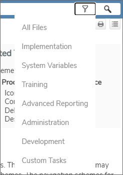

At the top of every page, a search bar is displayed.
You can enter a term in the search bar and then click the Search button, or, you can use the Filter button to select a specific topic area in which to perform the search, and return results only from that topic area when you click the Search button.

Selecting an item with the Filter button can be done at any time, either before or after you perform a search. In all cases, you will only be shown search results that match the topic filer you've chosen. The filter you select will remain active until you change or disable it. If you change the filter by selecting a different option from the dropdown menu, the search results will automatically switch to show you the results that match the new filter. Similarly, you can disable the filter and see all search results by selecting All Files from the filter dropdown.
Unlike a Google search, where contextual relationships and verbiage may affect the search results you see, the documentation search engine will return every topic that contains text that matches your search term. You have several options for altering the results the search engine retrieves.
Use the Filter button () in the search bar to filter the results to a specific category of topic.
When using more than one word to search for a specific phrase, try enclosing the search term in Quotation Marks, e.g., "sequence number". Enclosing the term in quotes will search for the exact phrase you enter. Otherwise, the search engine will return all topics that match any of the search terms you use.
You can also use search operators to change the parameters of your search. The following search operators are available to you.
AND: If you search for more than one word and do not enclose the search term in quotation marks, the AND operator is automatically assumed. The search engine will return every topic that contains all of the words. Though AND is the default operator, you can also type 'AND' (not case sensitive), the plus sign ( + ), or the ampersand ( & ) between search words.
OR: If you search for more than one word and do not enclose the search term in quotation marks, you can type 'OR' (not case sensitive) or the pipe symbol ( | ) and the search will expand to return all topics that contain ANY of the words in your search term.
NOT: To exclude a term from the search, use the word 'NOT', the carat symbol ( ^ ), or the exclamation point ( ! ) as an operator at the end of your search terms to search only for matching topics that do not contain the term following the operator. E.g. 'form controls ^ variables' will return all topics that contain the words 'form' or 'controls' but do not contain the word 'variables'.
Parentheses: You can use parentheses to search for multiple search operators, e.g., '(form | controls) (timeline ^ variables)'.
Because the documentation is routinely updated, and because many of the search files are cached on your local browser, you may notice that the search function returns no results. This is usually because your web browser (Chrome, Firefox, etc.) is caching old, invalid versions of the search database files in your browser cache. You can usually resolve this issue by clearing your browser cache's stored files. Your browser will then retrieve the updated files to perform the search function correctly.